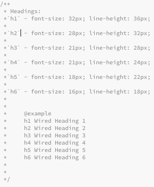

Welcome to the inofficial CSS Styleguide of Wired.com
In the Brandguide you can find information on how Colors, Logo and Typography is used on Wired.com
Screenshot examples give you an overview on how to implement those assets and styles yourself.
If you want a deeper, developer point of view on how to use certain CSS style, head over to the CSS Components page. There you'll find a detailled list with code snippets of Wired Components such as Headings, Lists and Media Blocks, their CSS Selectors and how to use them.
The CSS Components were generated with the help of Styledown - https://github.com/styledown/styledown
 All CSS Components with their Code Snippets are documented in their respective CSS files. For production, the CSS Files can be found seperated within the project /css folder.
For the Wired Styleguide, the seperate CSS files are concatenated with Gulp JS - https://github.com/gulpjs/gulp/
All CSS Components with their Code Snippets are documented in their respective CSS files. For production, the CSS Files can be found seperated within the project /css folder.
For the Wired Styleguide, the seperate CSS files are concatenated with Gulp JS - https://github.com/gulpjs/gulp/
CSS Documentation Example:
The code snippet examples (in the CSS Documentation) are written in Jade - http://jade-lang.com/
